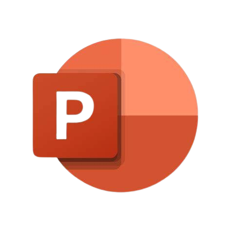
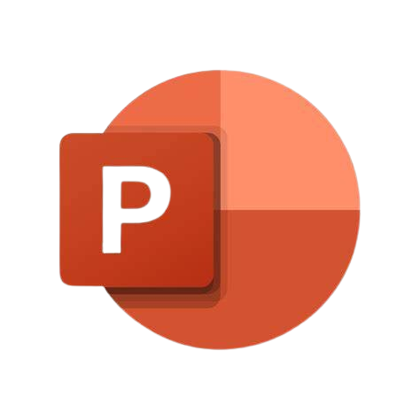

Contexte & Objectifs
Le projet visait, en groupe de 4, à explorer l’utilisation de l’intelligence artificielle (IA) dans un cadre académique, en mettant un accent particulier sur les étudiants et enseignants de l’IUT.
Objectifs principaux :
- Mesurer les représentations et pratiques actuelles concernant l’usage de l’IA dans l’apprentissage et l’évaluation.
- Identifier les besoins de la communauté en termes de formation et d’accompagnement pour intégrer ces technologies dans les pratiques pédagogiques.
Étapes du Projet
- Construction de l’enquête : Rédaction d’un questionnaire précis sur LimeSurvey.
- Collecte des données : Diffusion auprès des étudiants et enseignants (859 réponses).
- Redressement sur deux variables (statut et filière) : Création d'une table de marges puis utilisation de la macro calmar sur SAS pour obtenir le poids de chaque individu
- Nettoyage de la base de données : Filtres et suppressions des non répondants, 629 réponses exploitables
- Analyse des données : Analyse univariée et bivariée, visualisations via Excel
- Restitution des résultats : Création d'une présentation visuelle puis présentation orale de 20 minutes
Résultats & Compétences Acquises
Les enseignants et étudiants diffèrent significativement sur leurs attentes et craintes vis-à-vis de l’IA :
- Attentes dominantes : Support pédagogique et personnalisation de l’apprentissage.
- Principales craintes : Fiabilité des résultats, sécurité des données, et impact sur l’évaluation.
Compétences acquises : Conception et gestion d’une enquête, maîtrise des techniques de redressement, analyse critique des données, maîtrise des outils de visualisation.
Visuels du Projet
Recueil Méthodologique
Forces :
- Représentativité améliorée grâce à une redressement sur deux variables : pertinence des résultats
- Analyses quantitatives fiables et bien structurées.
Limites :
- Potentiel biais lié à la formulation des questions.
- Difficulté à généraliser les résultats à d’autres institutions que celle de l'IUT Paris - Rives de Seine
Outils & Langages Utilisés


 
